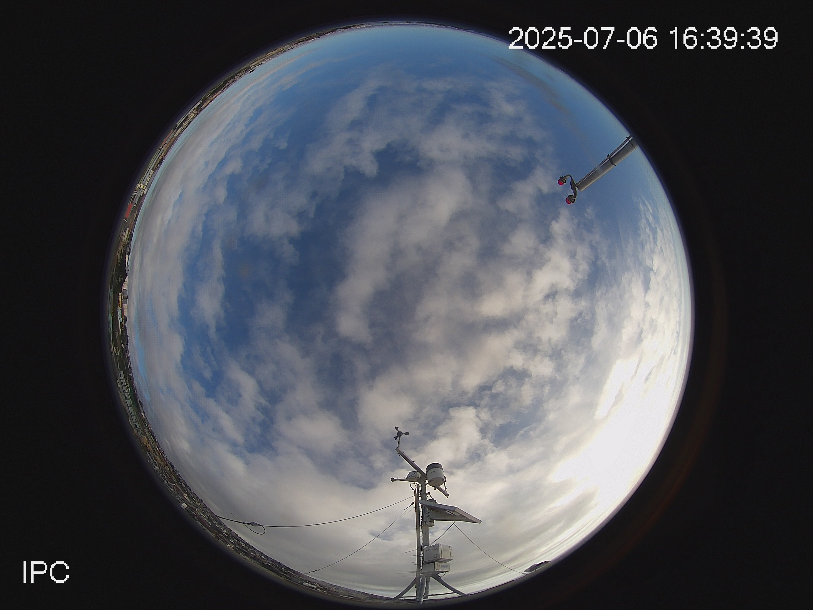
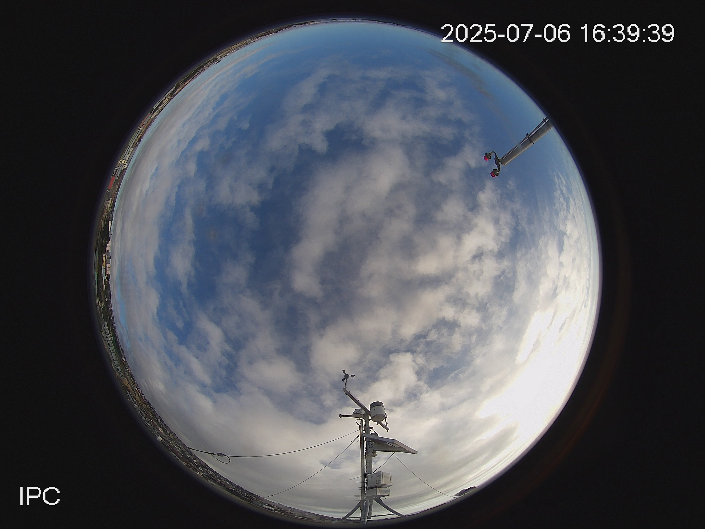

Science Tower Weather Station
Welcome! This is the **current live view** near the station. We aim to provide real-time atmospheric data. The high-resolution **WRF model forecast** will be added here soon, giving you predictive insights into the local microclimate.

3-Day Historical Overview
Explore the time-lapse GIF for each day and toggle the buttons below to see the daily summary sensor data.
🗓️ Yesterday's Weather (Day 3)

Data for Yesterday (Day 3)
Temperature (Avg/Max): 18.5°C / 24.1°C
Relative Humidity (Avg/Min): 68% / 45%
Wind Speed (Avg/Max): 5.2 m/s / 12.8 m/s
Total Radiation Received: 15.3 MJ/m²
🗓️ 2 Days Ago Weather (Day 2)

Data for 2 Days Ago (Day 2)
Temperature (Avg/Max): 15.1°C / 19.8°C
Relative Humidity (Avg/Min): 85% / 70%
Wind Speed (Avg/Max): 3.1 m/s / 7.5 m/s
Total Radiation Received: 8.9 MJ/m²
🗓️ 3 Days Ago Weather (Day 1)

Data for 3 Days Ago (Day 1)
Temperature (Avg/Max): 17.0°C / 22.5°C
Relative Humidity (Avg/Min): 72% / 51%
Wind Speed (Avg/Max): 6.0 m/s / 14.5 m/s
Total Radiation Received: 14.9 MJ/m²
Recent Images: A Glimpse of the Tower
.jpg)
.jpg) 

.jpg)
WRF Forecast Plot: Predicted Data
Below is the latest WRF model forecast plot: